электронный ресурс по учебной дисциплине 1-58 01 01 - "Инженерно-психологическое обеспечение информационных технологий"
|
||
| Оглавление | Программа | Теория | Практика | Контроль знаний | Об авторах | ||
| Практика
ЛАБОРАТОРНАЯ РАБОТА № 2 Компаратор напряжения на операционном усилителе 2.1. Цель работы Изучить работу и характеристики компаратора напряжения. 2.2. Теоретические сведения 2.2.1. Чувствительность к напряжению на входе (+) На схеме (рис. 2.1,а) на вход (-) подано опорное напряжение земли или 0 В. Напряжение Евх, на которое должна реагировать схема, приложено к входу (+). Во входной цепи компаратора Евх сравнивается с нулевым опорным напряжением, и состояние выхода говорит нам, положительно или отрицательно Евх относительно этого опорного напряжения. 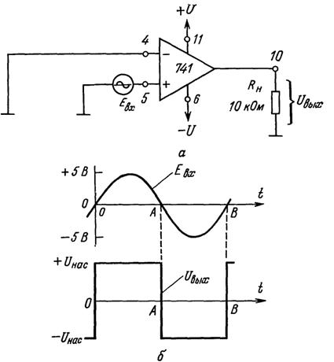 Рис. 2.1. Схема включения ОУ 741 как компаратора, чувствительного к переходам через 0 В по входу (+) (а), и формы сигналов на входе и выходе (б). Цоколевка соответствует ОУ 741 в корпусе DIP Как видно из рис. 2.1,б, Евх положительно в течение времени от точки 0 до точки А. Потенциал входа (+) будет в это время положительным по отношению к потенциалу входа (-), так что Uвых будет равно +Uнас. В том случае, когда Евх отрицательно (в течение времени от точки А до точки В), Uвых равняется , поскольку потенциал входа (+) при этом ниже потенциала входа (-). Таким образом, Uвых показывает, когда Евх положительно или отрицательно по отношению к нулевому опорному напряжению. Кроме того, переход Uвых из одного состояния в другое показывает, когда и в каком направлении Евх пересекает уровень опорного напряжения. Когда Евх пересекает опорный уровень, равный 0В, двигаясь в положительном направлении (как это имеет место в моменты времени 0 и В), Uвых становится также положительным. Если Uвых становится отрицательным (момент А), это означает, что Eвх только что пересекло уровень опорного напряжения в отрицательном направлении. 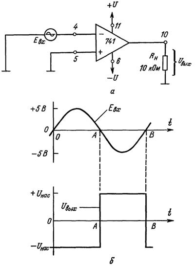 Рис. 2.2. Компаратор, чувствительный к переходам через 0 В по входу (-), а) схема включения; б) форма сигналов на входе и выходе 2.2.2. Чувствительность к напряжению на входе (-) На рис. 2.2а нулевое опорное напряжение (земля) подано на вход (+), а Евх приложено к входу (-). Во входной цепи компаратора Евх сравнивается с опорным нулем так же, как в схеме на рис. 2.1а. Однако, как показано на рис. 2.2б, в данном случае Uвых становится равным -Uнас при положительном Евх, т.е. на промежутке от точки 0 до точки А. В течение времени от точки А до точки В, когда Евх ниже нулевого опорного уровня, Uвых равно -Uнас. Итак, когда 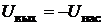, Евх больше 0 В; если 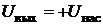, Eвх отрицательно. Схемы компараторов на рис. 2.1 и 2.2 называют детекторами нуля. 2.2.3. Детекторы ненулевого уровня Детектор уровня напряжения. Схемы компараторов, показанные на рис. 2.1 и 2.2, можно использовать также для сравнения напряжений с опорным уровнем, отличным от 0 В. В схеме на рис. 2.3, а ко входу (-) приложено опорное напряжение +2 В. В случае когда входное напряжение Евх меньше Uoп, Uвых равно -Uнас поскольку напряжение на входе (+) по отношению к напряжению на выходе (-) отрицательно. При Евх, превышающем Uоп, напряжение на входе (+) становится положительным по отношению к напряжению на выходе (-) и Uвых переходит в +Uнас. Как видно из рис. 2.3,б, Uвых показывает, больше или меньше Евх, чем Uoп; в момент перехода Uвых от одного напряжения насыщения к другому Eвх равно Uоп. Пример 2.1. Найти результирующую форму кривой Uвых в схеме рис. 2.3,а при полярности Uоп, обратной указанной на этой фигуре, и входном сигнале Евх треугольной формы, показанном на рис. 2.3, б. Решение. Когда Евх меньше Uоп, напряжение на входе (-) более положительное, чем на входе (+), и . В момент пересечения Eвх уровня Eоп (-2 В) в положительном направлении Uвых переключается в состояние +Uнас, как показано на рис. 2.4. При пересечении Евх уровня Uoп в отрицательном направлении Uвых переключается на Uнас. Таким образом, Uвых говорит о том, что оно выше Евх, чем Uоп, ниже его или равно ему. На рис. 2.5 показана модифицированная схема детектора уровня напряжения, представленного на рис. 2.3. Когда Евх выше Uоп, Uвых ‑ положительное и смещает в прямом направлении светоизлучающий диод (СИД) зеленого свечения. Включение этого светодиода может индицировать состояние «включено» или «пуск». Если Евх ниже Uoп, Uвых будет отрицательно и загорается красный СИД. Это может соответствовать состоянию «выключено» или «стоп». Уровень насыщения выходного тока ОУ 741 равен приблизительно 25 мА. Такого значения тока достаточно для довольно яркого свечения светодиода. В описанной схеме можно использовать выпускаемые промышленностью сборки СИД, содержащие в одном корпусе светодиоды красного и зеленого свечения. 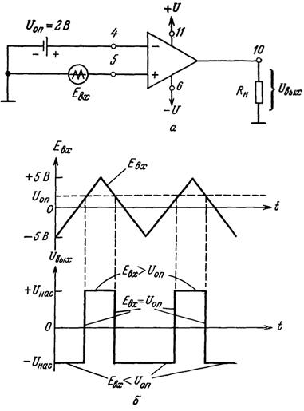 Рис. 2.3. Детектор уровня напряжения (а) и форма сигналов на входе и выходе схемы (б)
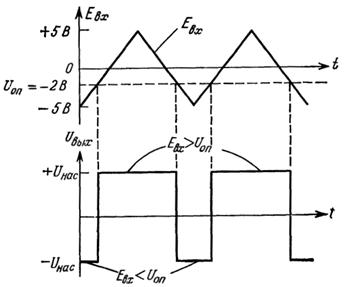
Рис. 2.4. Решение примера 2.1 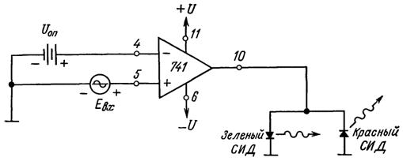 Рис. 2.5. Детектор уровня напряжения с индикацией на светодиодах 2.2.4. Получение опорных напряжений на практике Так как операционные усилители питаются обычно от хорошо стабилизированных источников, можно использовать этот отрадный факт для получения недорогого источника опорного напряжения. В качестве такого источника на рис. 2.6 служат резисторы R1 и R2, которые делят напряжение питания в соответствии со следующим выражением: 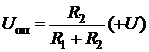. Пример 2.2. Вычислить Uоп для схемы на рис. 2.6. Решение. Из соотношения получаем 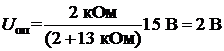.
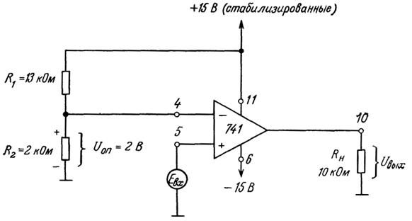 Рис. 2.6. Получение опорного напряжения с делителя напряжения 2.2.5. Инвертирующий компаратор Триггер Шмитта – это компаратор с положительной обратной связью. В этой схеме часть выходного сигнала операционного усилителя подается на неинвертирующий вход и задает пороги переключения схемы. Электрическая схема инвертирующего триггера Шмитта представлена ниже (рис. 2.7). 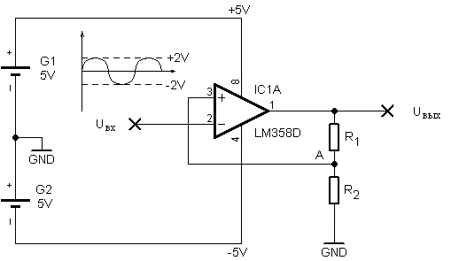 Рис. 2.7. Инвертирующий компаратор Операционный усилитель запитан от двуполярного пятивольтового источника питания. На инвертирующий вход Uвх подается синусоидальный сигнал амплитудой ±2 В. Резисторы R1 и R2 имеют номиналы 25 кОм и 10 кОм соответственно. Напряжение на неинвертирующем входе снимается с делителя напряжения подключенного к выходу операционного усилителя и мы можем рассчитать его значение для положительного и отрицательного напряжения насыщения. 1) 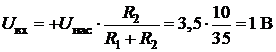 2) Когда на выходе усилителя положительное напряжение насыщения – на неинвертирующем входе напряжение 1 В. Допустим, входной сигнал медленно нарастает от нуля. Пока напряжение сигнала меньше напряжения на неинвертирующем входе – ничего не происходит. Как только сигнал превысит порог в 1 В, выходное напряжение операционного усилителя «переключится» и станет равным отрицательному напряжению насыщения. Это изменит напряжение на неинвертирующем входе, оно станет равным (-1) В. Входной сигнал будет нарастать до своего максимум, а потом пойдет на спад. Когда его амплитуда станет меньше одного вольта (1 В), на выходе усилителя будет по-прежнему отрицательное напряжение насыщения. И только когда входной сигнал пересечет порог (-1) вольт, выходное напряжение снова «переключится» и станет равным положительному напряжению насыщения. Естественно, это повлечет за собой изменение порогового напряжения. На графике (рис. 2.8) можно увидеть, как меняется выходной сигнал операционного усилителя в зависимости от входного. 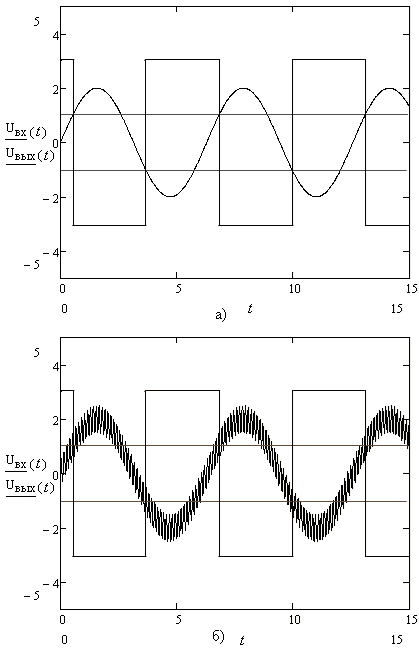 Рис. 2.8,а ‑ зашумленный сигнал не будет вызывать колебаний на выходе усилителя. б ‑ наличие зашумлённого сигнала. Триггер Шмитта демонстрирует такое свойство систем, как гистерезис. Которое заключается в том, что реакция системы на текущее воздействие зависит от воздействия, действующего на нее ранее. На графике (рис. 2.9) показана зависимость выходного напряжения от входного (петля гистерезиса). 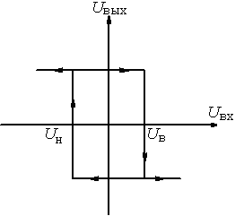 Рис. 2.9. Петля гистерезиса, где Uв – верхний порог триггера Шмитта, Uн ‑ нижний порог. 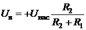; 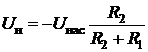. Еще одно свойство триггера Шмитта, возникающее вследствие положительной обратной связи – это увеличение скорость переключения выходного напряжения, по сравнению с скоростью простого компаратора. Как только выходное напряжение операционного усилителя начинает меняться, положительная обратная связь увеличивает разностное напряжение (Uвх1 – Uвх2) и еще больше изменяет выходное напряжение, что в свою очередь еще больше увеличивает разностное напряжение. 2.2.6. Практические замечания Как известно, при конструировании реальной схемы компаратора между фактическими характеристиками ОУ и представленной выше идеальной ситуацией, имеются некоторые различия. Во-первых, выходное напряжение Uвых не изменяется от -Uнас до +Uнас мгновенно. Этот переход происходит за конечный промежуток времени. Во-вторых, при равном нулю дифференциальном входном напряжении EД напряжение Uвых, что не будет в точности равно нулю. И наконец, на выходе ОУ могут постоянно или при подходе ЕД к 0 В могут возникать непредсказуемые колебания. Все это вызывает необходимость глубже изучить параметры ОУ и то, каким образом можно свести к минимуму различие между их идеальными и реальными характеристиками. 2.3. Приборы и оборудование Программа компьютерного моделирование электронных схем Multisim: 2.4. Порядок проведения лабораторной работы 2.4.1. Неинвертирующий компаратор 1. Соберите схему неинвертирующего компаратора, показанную на рис. 2.10. В качестве входного сигнала (Uвх) используйте синусоидальный сигнал генератора . 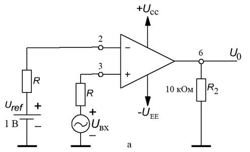 Рис. 2.10,а. Схема неинвертирующий компаратора 2. Установите значение напряжения , а входной сигнал Uвх= 4 В частотой fвх = 500 Гц. 3. Нарисуйте формы сигналов входного и выходного напряжения (см. рис. 2.10,б,в). 4. Измените значение напряжения UREF (для Uвх=4 В) и наблюдайте изменение форм осциллограмм. 5. Измените значение напряжения Uвх (для UREF = +1 В) и наблюдайте изменение форм осциллограмм. 6. Установите значение напряжения UREF = -1 В и повторите пункты 2 ‑ 5. 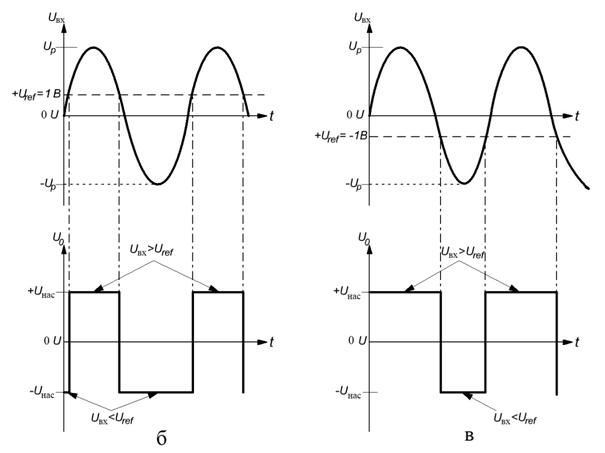 Рис. 2.10, б, в. Графики зависимости напряжения от времени у неинвертирующего компаратора. 2.4.2. Инвертирующий компаратор 1. Соберите схему инвертирующего компаратора, показанную на рис. 2.10, а; 2. Зафиксируйте картинку форм сигналов входного Uвх и выходного Uвых напряжения. 2.5. Содержание отчёта 1. Цель работы. 2. Схемы, которые были исследованы. 3. Результаты исследования. 4. Выводы. 5. Ответы на контрольные вопросы. 2.6. Контрольные вопросы 1. Назовите особенности триггера Шмитта. 2. Назовите области применения компараторов. 3. Поясните такое свойство системы, как гистерезис.
|
| (С) БГУИР |